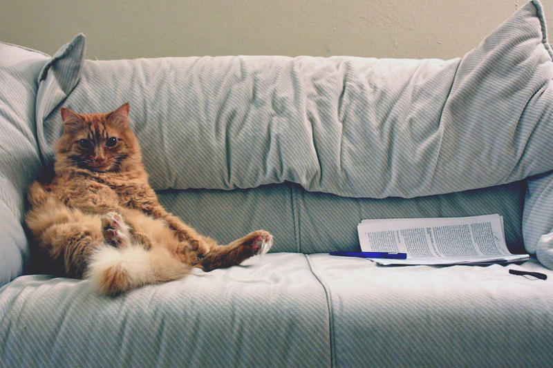
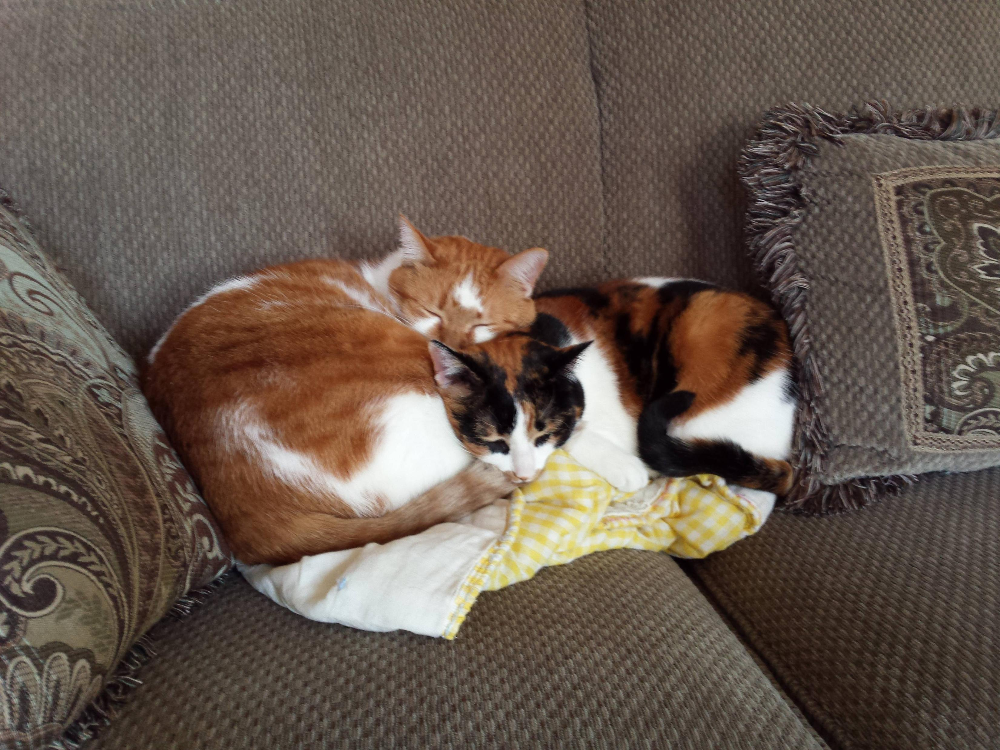
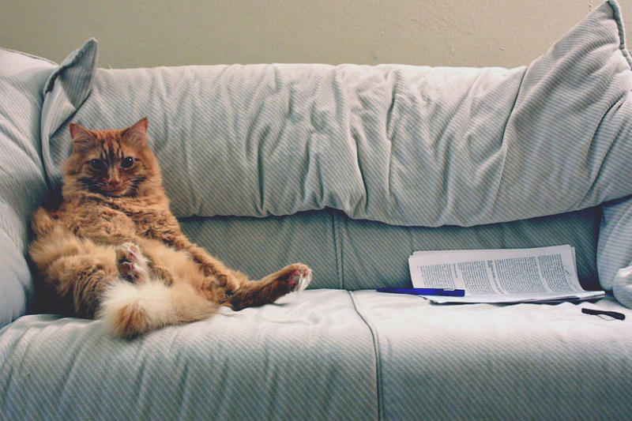
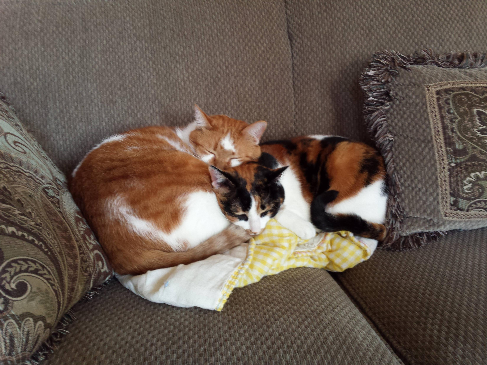

Train:
Candidates: 0, 1, 2, 3
 



Intended concept: There are two cats on the same sofa.
Solution provided by tool:
The chosen answer is 1.
The discriminator is: Forall q0: sofa!0. Exists q1: cat!1. Exists q2: cat!2. And(right!1!2)